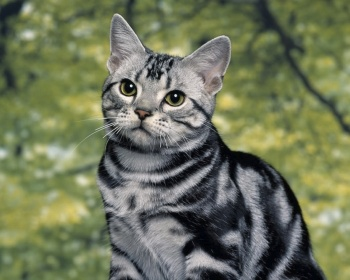

|  | Порода кошки американская короткошерстная сочетает в себе лучшие черты домашних кошек - доброту, ласку, терпеливость и любовь к людям. Они довольно умны, не агрессивны и не злопамятны, сильно привязываются к своим хозяевам и чувствуют их эмоциональное состояние. Эти кошки будут рады провести время и со взрослым человеком, и с ребенком, в то же время сохраняя самостоятельность. Американских короткошерстных можно назвать крупными питомцами - взрослые самцы в среднем имеют вес 5-7 кг, самки около 4кг. Лапы мускулистые, мордочка клиновидная, уши средней длины. Существует масса разнообразных окрасов данной породы, от однотонных до табби и черепаховых. Средняя продолжительность жизни 16 лет, но может доходить до 20 и более - эти коты настоящие долгожители. |